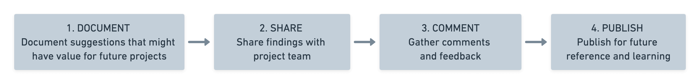

On all projects we seek to build on our experience from completed projects.
The purpose of documented Lessons Learned is to improve the outcomes on this project but also to provide future project teams with information that can increase their efficiency and effectiveness.
Lessons Learned Workflow:
Lessons Learned will be captured throughout all project stages.
In collaboration with each Lead Appointed Party, the Appointing Party shall capture lessons learned during the project and record them here in the Lessons so that they can be called upon by future projects.